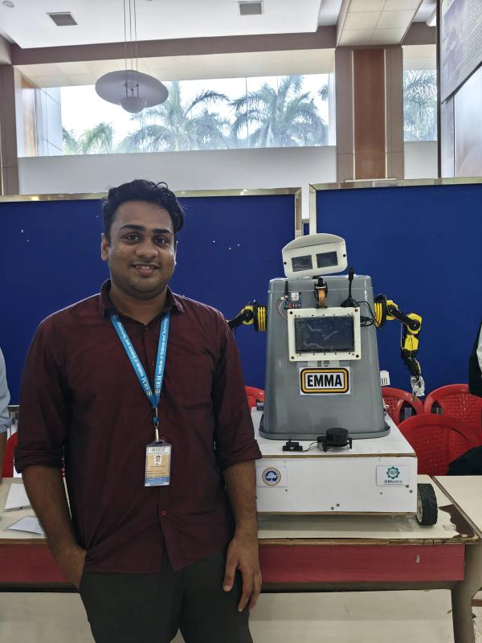
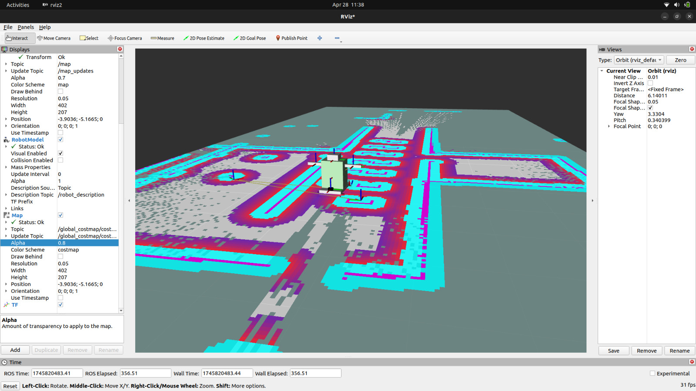

EMMA (Enhanced Multitasking Medical Assistant)
Interactive Healthcare Robot

Overview
Developed EMMA, an interactive healthcare robot designed to monitor patients, measure vital signs, and dispense medicines autonomously. Showcased at Smart India Hackathon (SIH) 2023, it integrates complex ROS 2 navigation stacks with IoT connectivity for a seamless smart healthcare solution.
Key Contributions
- ROS 2 Navigation: Implemented SLAM-based autonomous movement using LiDAR, depth cameras, and sensor fusion for robust obstacle avoidance in dynamic hospital environments.
- IoT & Remote Monitoring: Enabled real-time patient data transmission via ESP32/Raspberry Pi and MQTT-based cloud connectivity, allowing doctors to monitor vitals remotely.
- Simulation & Optimization: Developed high-fidelity Gazebo simulations to test and refine robot behavior, path planning, and recovery behaviors before physical deployment.
Impact
- Reduces medical staff workload through automation of routine tasks.
- Enhances patient care with continuous AI-driven monitoring.
- Enables remote healthcare accessibility through real-time IoT stats.

Remote Monitoring Dashboard

Gazebo Simulation Environment